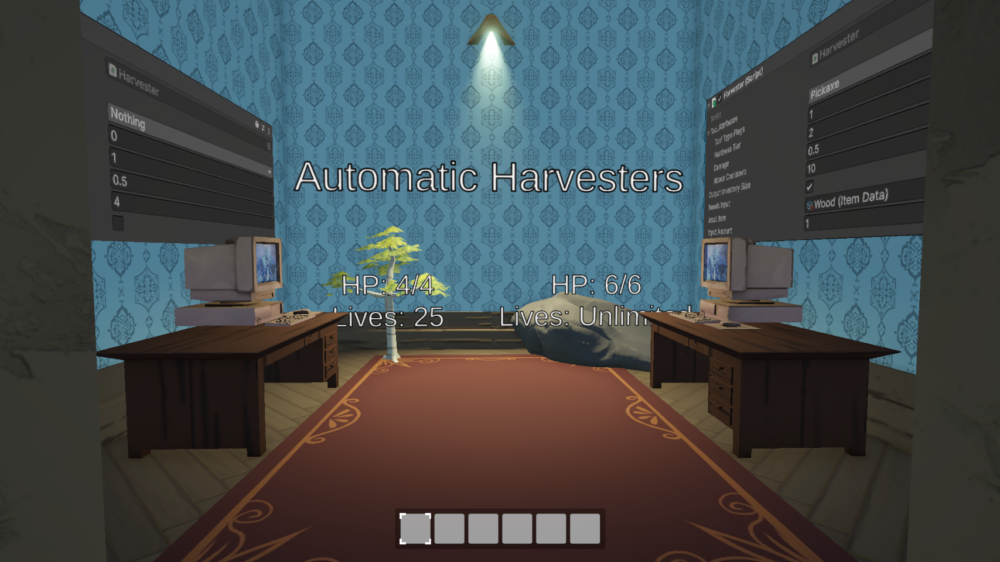
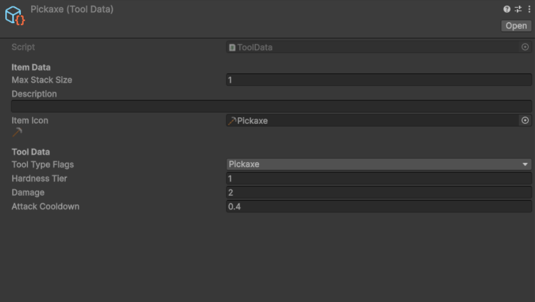

The goal of this specialisation project was for me to explore my interests in, research, and implement a resource management system similar to what's found in games such as Satisfactory, Factorio, Valheim, Rust, and many more.
The items in this project were made to be Scriptable Objects (SO) to help seperate the data from the scripts.
This, in turn, also makes it easier for designers to add, remove and change items as necessary without having to go digging through the code itself.
Additionally, this abstraction helps shorten the amount of code needed.
Since every item is in essence an ItemData SO, only a single generic function is needed to implement a behavior, instead of needing one function for every item type.
Furthermore, inheritance is used to allow for more complex items, such as tools.
Since tools derives from items, they have the same base functionality as items by default.
However, they can also have extra logic added on top.
In the case of tools, the extra data is used to describe their damage, type, tier and attack speed.
To access this data, an ItemType enum is being stored in the base ItemData SO.
This enum can be used to determine what type to cast the item to, giving full access to its data on demand.

The inventories are made up of dictionaries.
Specifically a Dictionary<slotID, InventorySlot>, where InventorySlot is a struct containing the item type and an amount.
These inventories have functions for adding items, removing items, dropping items, and more.
Most of the time, this is able to be handled internally within the inventory iteself with the use of slot indices.
The tricky part appears when moving things between inventories.
To solve this issue, I made an InventoryHelper class that holds static functions for moving items, splitting items, and filling items.
This solution combines moving items internally in the same inventory and externally between inventories into one function.
In the video on the left, you can see the different features this inventory system has.
And yes, the Inventory and InventoryUI are two seperate parts.
Resource node is the generic name for an object that can be damaged and harvested in order to recieve items.
This script is able to attach to any sort of mesh or object that is wanted.
On top of this, all of the important variables are serialized, allowing for easy iteration and saving in the form of prefabs.
The simplest variables handle things such as: health, hardness, required tool type(s) (flags), and how many times it can be harvested before it breaks.
The DropsTable, on the other hand, is a bit more invloved.
It's an array of structs that hold the item that drops, how many of them to drop, and when to drop them.
The amount is a Vector2Int that describes the upper and lower limit of what to randomize.
Whereas, WhenToDrop is an enum that, unsuprisingly, describes when to drop the item.
The options for this are: EveryTime, RandomChance, EveryNthTime, and OnlyOnce.
Every time the node's health gets depleted, it gets harvested, and the health gets restored.
The harvesting part is what loops through all of the drops, checking if WhenToDrop applies, and if so, it randomizes a number between the lower and upper drop amount, finally, it tries to add it to the inventory that last interacted with the node.
As a proof of concept and to better show the versitility of my code, I decided to implement automatic harvesters.
These harvesters work by having a trigger that detects the resources within its "area of effect".
It then selects one at random, damaging it continuously until it gets harvested, and its items get deposited into the harvester.
As with everything else so far, the variables for this script can be changed to fit different use cases.
It has the same attribues as tools with its damage, tier and types, so as to more easily integrate into the already established damage function.
Additionally, the harvesters have two inventories.
One for inputs, and one for outputs.
The one for outputs is just a normal inventory. Whereas, the one for inputs is a bit different.
Inputs are optional, depending on the use case, you could have either no input or one input.
When inputs are enabled, you get to specify what kind of item to input and how many are needed.
To give even more uses for items, I decided that adding crafting was the logical next step.
This system works by using recipes.
Recipes are scriptable objects that contain an array of input items, and an array of output items.
An input only describes an item and its amount, while an output describes: the item, a min and max amount, and a WhenToOutput emum, with the values of Always and RandomChance.
On top of this, each recipe also has a crafting time, tier and categories.
The tier and categories are to split up the recipes so that different "crafters" only have access to certain recipes.
For example, a furnace might only have access to smelting recipes, and an anvil might only have access to smithing recipes.
To go along with the recipes, I also made automatic crafters.
They also have a tier and categories, like the recipes.
These are used to find all the recipes that should be visible and useable by the crafter.
After selecting a recipe, the crafter looks for the correct items and amounts in the inputs before crafting to start crafting.
After which, it removes the inputs, and adds the outputs.